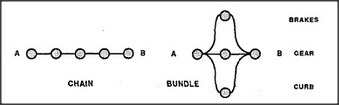
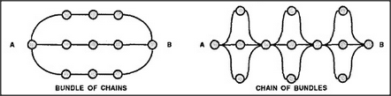

When people disagree, we often say that one side's position seems stronger than the other. But what has strength to do with reasoning? In logic, arguments are simply either right or wrong, since there is not the slightest room for matters of degree. But in real life, few arguments are ever absolutely sure, so we simply have to learn how various forms of reasoning are likely to go wrong. Then we can use different methods to make our chains of reasoning harder to break. One method is to use several different arguments to prove the same point — putting them in parallel. By analogy, when you park a car on a steep hill, it isn't safe to depend on brakes alone. No brake can work unless all its parts do — and, unhappily, all those parts form a long and slender chain no stronger than its weakest link.
-- Driver's foot presses on brake pedal. --- Brake pedal forces piston into master cylinder. ---- This forces brake fluid to flow from cylinder.
-----Brake fluid flows through tubes to brakes at wheels. ------Pistons in brake cylinders apply force to brake shoes. -------Brake shoes press on wheel drums, stopping wheels.
An expert driver also leaves the car in gear and turns the wheels into the curb. Then, though no one of these tricks is perfectly secure, the combination cannot fail unless three things go wrong at once. This whole is stronger than any of its parts.
A chain can break with any single injury, but a parallel bundle cannot fail unless every one of its links has been broken. Our car can't roll away unless all three — brake, wheel, and parking gear — go wrong at once. Parallel bundles and serial chains are only the simplest ways to link together various parts. Here are some others.
Each serial connection makes a structure weaker, while each parallel connection makes it stronger.